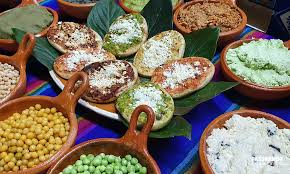
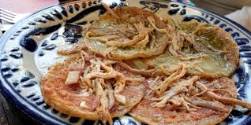

En la Zona Centro de Tlatlauquitepec Puebla hay mucho que hacer y visitar, desde caminar por su tranquilo centro histórico hasta realizar actividades o deportes extremos. Al contar con diferentes climas como el frio en la zona sur, templada de la cabecera municipal y cálida en el norte, este pueblo mágico se convierte en el destino con la familia amigos o simplemente salir a relajarse y disfrutar de su naturaleza al máximo

Gran variedad de platillos tradicionales con sabores únicos, los cuales te van a enamorar con su sazón.
Las manos mágicas de Tlatlauquitepec Puebla son obras llenas de color, texturas, arte y distintos materiales. Te enamoraras de sus bordados en textiles, vinos tradicionales, tejidos, café orgánico, dulces y típicos y conservas.

Disfruta recorriendo la ruta del café desde los cultivos, cosecha, despulpado, secado entre otros hasta saborearlo en un taza con café.